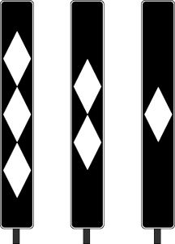
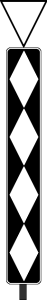

Signalbuch-Online
Signal Bü 2 – Rautentafel
Informationen zur Bedeutung, Beschreibung und Aufstellung der Rautentafel nach der Eisenbahn-Signalordnung.
(1)
Bedeutung
Ein Überwachungssignal ist zu erwarten.
(2)
Beschreibung
Eine rechteckige schwarze Tafel mit vier auf den Spitzen übereinander stehenden rückstrahlenden weißen Rauten.
(3)
Die Rautentafel kann bei Eisenbahnen des Bundes mit einem weißen rückstrahlenden Rand versehen sein.
(4)
Die Rautentafel kann vorübergehend auch nicht rückstrahlend sein.
(5)
Anfang der Einschaltstrecken
Das Signal Bü 2 kennzeichnet den Anfang einer betrieblich zu beachtenden Einschaltstrecke von Blinklichtern oder Lichtzeichen mit Überwachungssignal.
(6)
Aufstellung
Das Signal Bü 2 steht mindestens doppelt so viel Meter vor dem Überwachungssignal, wie die dort zulässige Geschwindigkeit in km/h beträgt.
(7)
Rautentafel mit abnehmenden Rauten
Auf die Rautentafel können weitere Rautentafeln folgen, bei denen die Anzahl der Rauten in Fahrtrichtung abnimmt. Es stehen in der Regel drei weitere Rautentafeln vor dem Überwachungssignal. Die in Fahrtrichtung letzte Rautentafel steht etwa 100 m vor dem Überwachungssignal, die anderen Rautentafeln stehen in je 75 m Abstand voneinander davor.

(8)
Aufstellung im verkürzten Abstand des Bremswegs der Strecke
Ist bei Eisenbahnen des Bundes der Abstand der Überwachungssignale vom Bahnübergang um mehr als 5% kürzer als der Bremsweg der Strecke, befindet sich am Signal Bü 2 ein rückstrahlendes, auf der Spitze stehendes weißes Dreieck mit schwarzem Rand. Bei beschränktem Raum kann das Dreieck vor dem Signal Bü 2 stehen.
